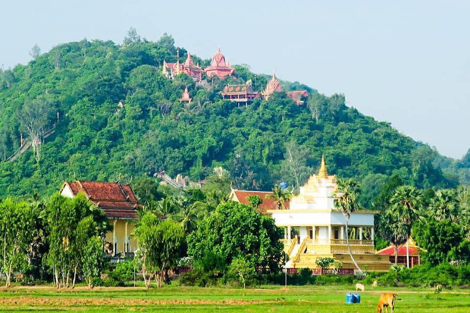
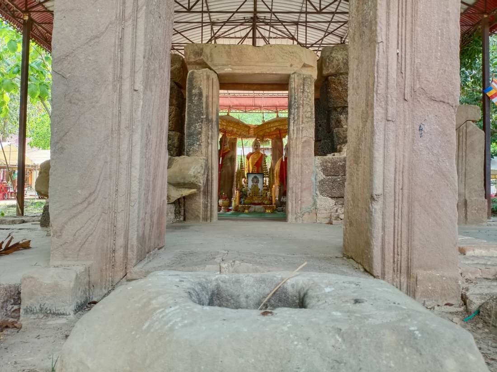
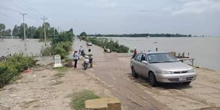
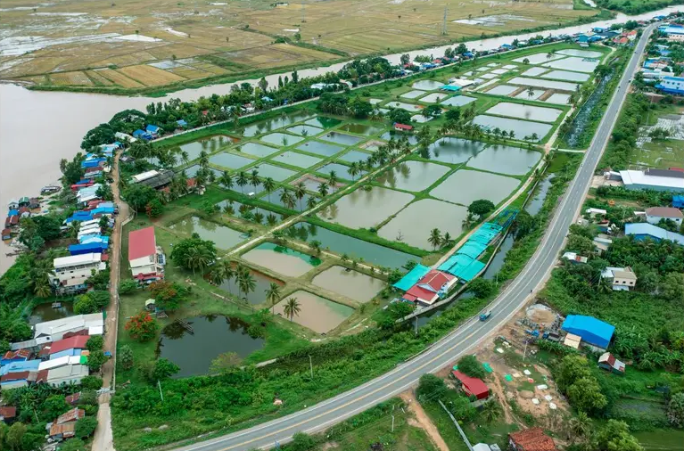
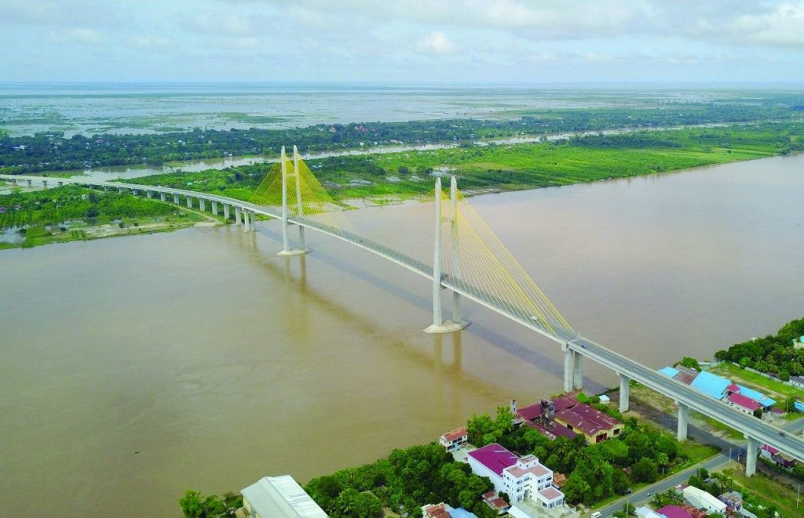
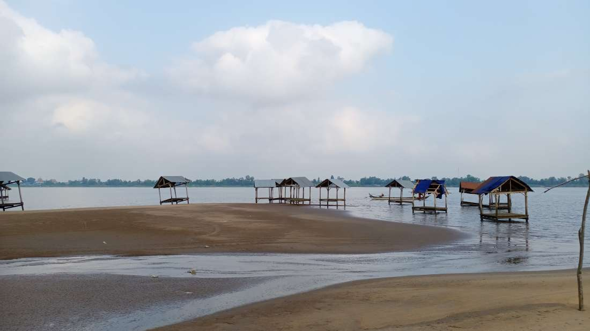
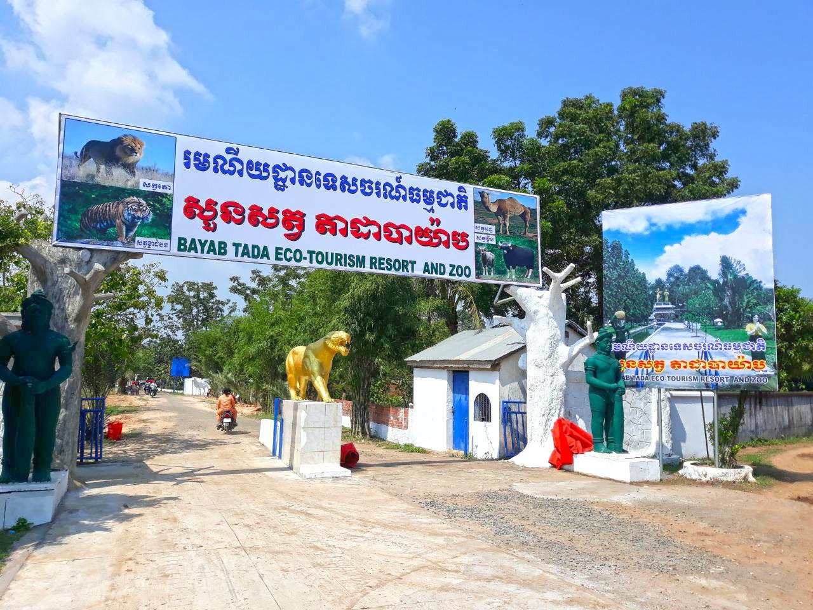
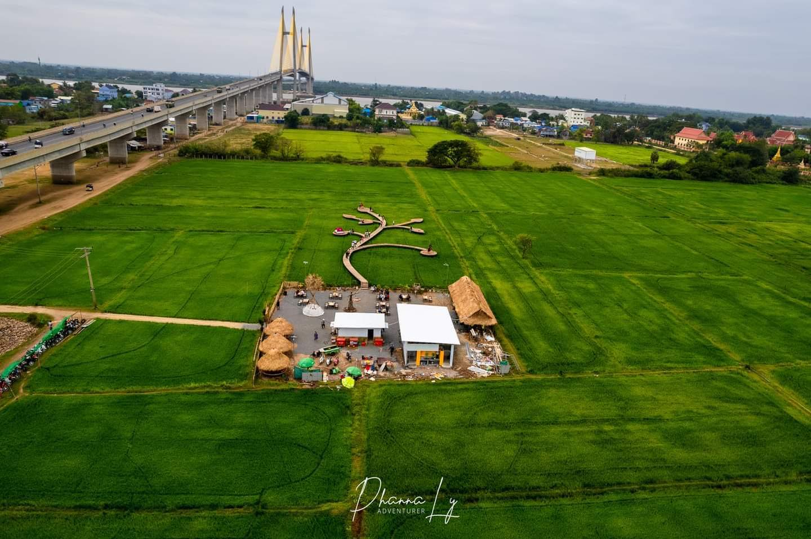
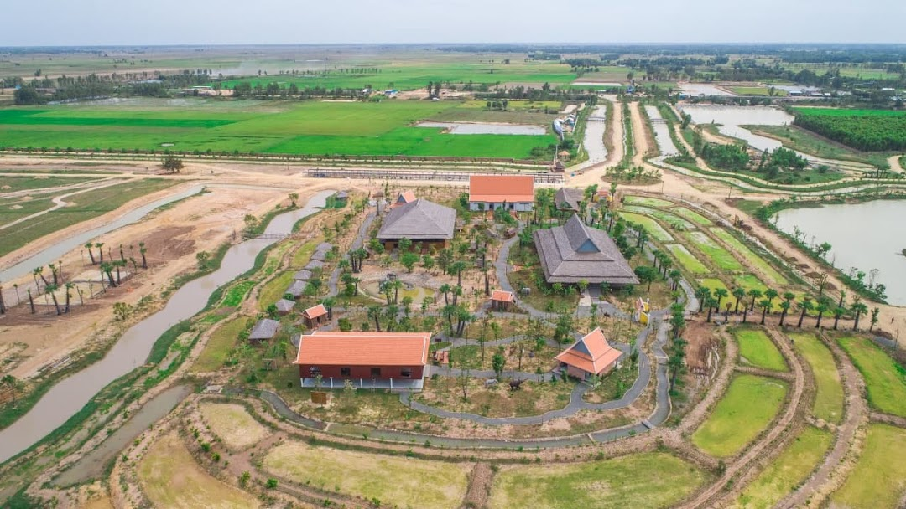

• ផ្ទៃក្រឡា • ប្រជាជន • សន្ទភាព • ល្វែងម៉ោង • លេខក្រមទូរស័ព្ទ • ក្រមអ.ម.អ ៣១៦៦ • ស្រុក • ឃុំ • ភូមិ |
: សរុប ៤៨៨៣ គម² : សរុប ៩៤៧៣៥៧ នាក់ : 190/km² : UTC+០៧ : +៨៥៥ : KH-១៤ : ១២ : ១១៦ : ១១៣៩ |
| ខេត្តព្រៃវែង | |||
| លេខកូដឃុំ | ឈ្មោះស្រុក-ក្រុងជាអក្សរខ្មែរ | ឈ្មោះស្រុក-ក្រុងជាអក្សរឡាតាំង | ចំនួនឃុំ-សង្កាត់ |
| ១៤០១ | ស្រុកបាភ្នំ | Ba Phnum District | ៩ |
| ១៤០២ | ស្រុកកំចាយមារ | Kamchay Mear District | ៨ |
| ១៤០៣ | ស្រុកកំពង់ត្របែក | Kampong Trabaek District | ១៣ |
| ១៤០៤ | ស្រុកកញ្ជ្រៀច | Kanhchriech District | ៨ |
| ១៤០៥ | ស្រុកមេសាង | Me Sang District | ៨ |
| ១៤០៦ | ស្រុកពាមជរ | Peam Chor District | ១០ |
| ១៤០៧ | ស្រុកពាមរក៍ | Peam Ro District | ៨ |
| ១៤០៨ | ស្រុកពារាំង | Pea Reang District | ៩ |
| ១៤០៩ | ស្រុកព្រះស្ដេច | Preah Sdach District | ១១ |
| ១៤១០ | ក្រុងព្រៃវែង | Krong Prey Veng | ៤ |
| ១៤១១ | ស្រុកពោធិ៍រៀង | Pur Rieng District | ៦ |
| ១៤១២ | ស្រុកស៊ីធរកណ្ដាល | Sithor Kandal District | ១១ |
| ១៤១៣ | ស្រុកស្វាយអន្ទរ | Svay Antor District | ១១ |